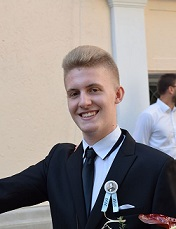

Bemutatkozás
Mikula Gergő vagyok a Budapesti Műszaki és Gazdaságtudományi Egyetem elsővés gépészmérnök hallgatója.
Középiskolás tanulmányaimat szakgimnáziumban folytattam Békéscsabán, ahol vízügyi technikusként végeztem 2019-ben.
Utolsó évemben részt vettem az Országos Szakmai Tanulmányi versenyen (OSZTV), ahol országos 5. helyezett lettem.
Ez után kicsit eltávolodtam a tanult szakiránytól és műszaki irányban az ország legjobb egyetemén a gépészmérnöki kart választottam. Hogy miért pont a gépészmérnöki kart? Új kihívásokra és új tapasztalatokra vágytam.
Egy szakmával a kezemben, és egy műszaki középiskolából érkezve bátran vágtam bele a BME kalandos éveibe.